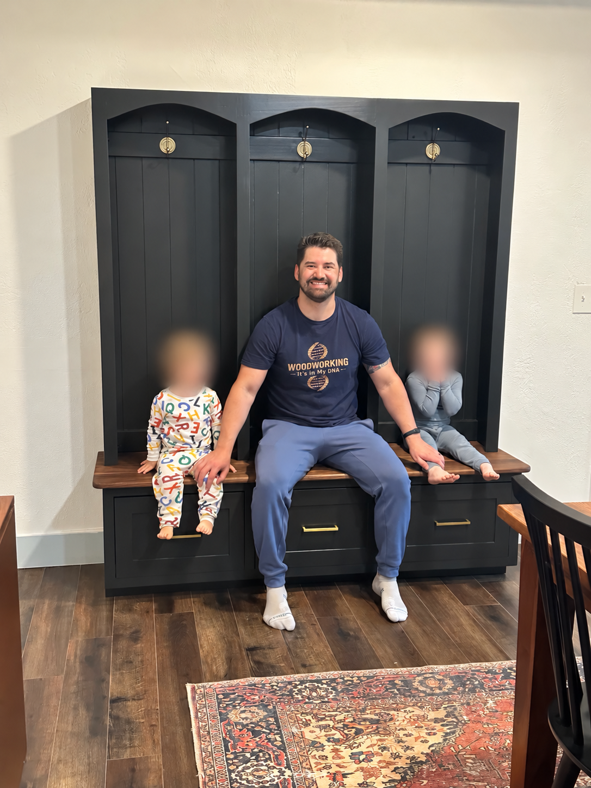

Making time
to make furniture.
Galatians 6:9 - "Let us not become weary in doing good, for at the proper time, we will reap a harvest if we do not give up."
I’m a husband, a dad to two young boys, and a software sales leader in Texas. I’m also a woodworker—usually whenever I can find the time.

A family name. A new chapter.
My great-grandfather and grandfather ran a construction business called DiSibio Builders. The name DiSibio Builds is a nod to their business and our family history. DCBO is a family shorthand and heritage mark that I’m keeping as part of the brand.
This began as Wood & Working—a place to share woodworking around work and family life. As the projects and the vision grew, DiSibio Builds felt like a more personal name for what I’m building.
Making time to build.
For me, woodworking means making time to build furniture while working full time and raising a family. I don’t have an unlimited budget or a dedicated shop. I build in our garage, which still needs to fit my wife’s car.
I enjoy making things we can use in our home, but I also want to see where this can go. The longer-term goal is to turn woodworking and creating videos into something I can do full time. Right now, I’m learning what it takes to get there, one project at a time.
I’m sharing the learning curve.
There are plenty of woodworkers who can teach this craft better than I can. What I want to share is the experience of being in the middle of it: choosing a design, trying something unfamiliar, running into a problem, and figuring out how to move forward.
Sometimes that’s a mistake in a build. Sometimes it’s getting a tool to work the way it should. And sometimes it’s finding a way to make progress when the time I had planned for the shop disappears.
I want the videos to show those decisions and fixes alongside the finished work. If something I’ve struggled through makes your next project a little easier, that’s a good reason to share it.
Starting with the shop.
The current big project is turning my hobby woodworking garage into a more functional woodshop. I’m building cabinets, improving tool storage, and making a space that works for the furniture I want to build next.
If you’re balancing work, family, and something you’d like to spend more time doing, I hope you’ll follow along. I’m figuring it out too.
Follow the journey on YouTube ↗See the projects